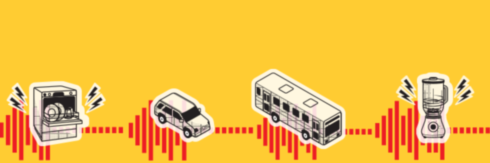

Níveis de Ruído
SLIDE 4 DE 15
Áreas residenciais e industriais frequentemente excedem os limites recomendados, expondo a população a riscos à saúde.
- Zonas residenciais: média de 75,6 dB (limite OMS: 65 dB)
- Áreas industriais: até 78,1 dB
- Ruídos acima de 70 dB causam desgaste ao organismo em mais de 50% dos expostos.